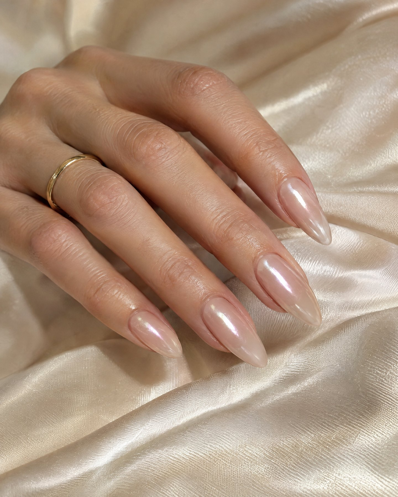
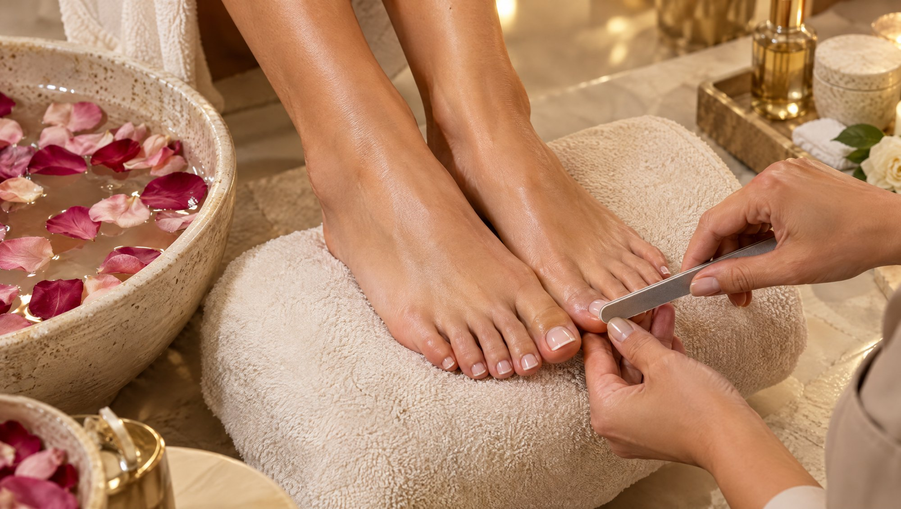
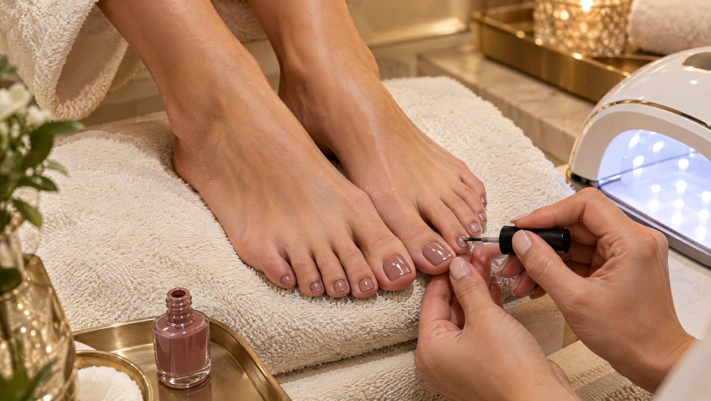
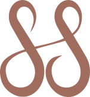
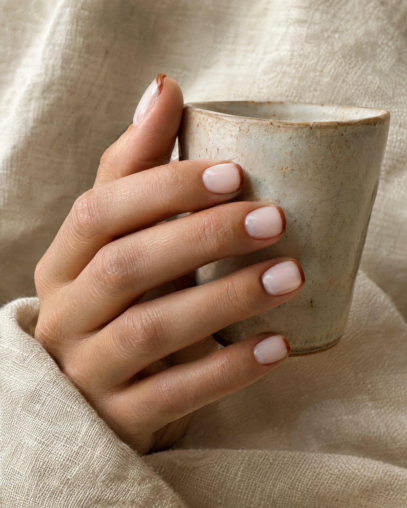
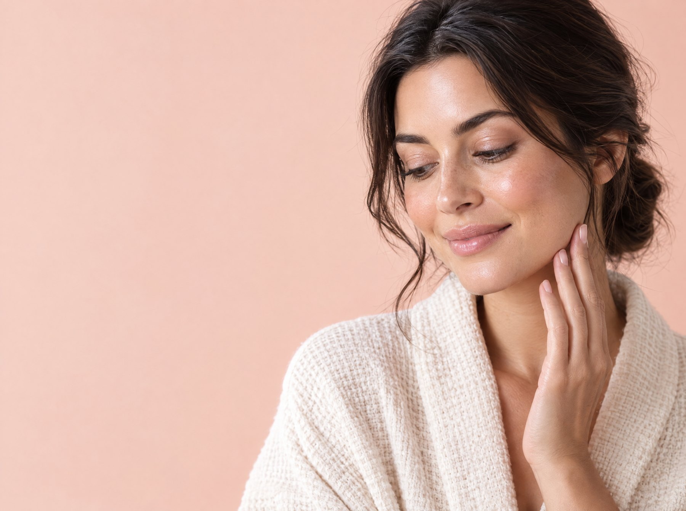

Pedikür
Bakımlı eller, kişisel dokunuşlar.
Bakımlı eller ve kişisel dokunuşlar.



Bakımın
ayrıntıları
Pedikür hizmeti kadın ve erkekler için ayak ve tırnak bakımını kapsar. İhtiyaç ve uygulama ayrıntılarını ekiple görüşebilirsin.

Bakım
Mevcut tırnak durumunu birlikte değerlendirelim.
Tercih
Form ve renk seçeneklerini konuşalım.
Özenli uygulama
Uygulama adımlarını randevuda netleştirelim.
Bilgilendirme
Bakım sonrası sorularını yanıtlayalım.

Sana özel bir bakım
- 01
Tercihini paylaş
İstediğin bakımı, rengi veya görünümü konuşalım.
- 02
Uygulamayı planlayalım
Tırnak durumuna uygun adımları birlikte belirleyelim.
- 03
Randevunu oluşturalım
Uygun zamanı birlikte netleştirelim.
Merak
ettiklerin
Pedikür hizmeti hakkında en çok merak edilen soruları senin için yanıtladık.
Pedikür kimler için uygundur?
Uygunluk kişisel duruma ve hedeflere göre değişir. Başlangıç için Kalissa ekibiyle ön görüşme yapabilirsin.
Randevu öncesinde tasarım seçebilir miyim?
Tercih ettiğin renk veya tasarım için örnek görselini ekiple paylaşabilirsin.
Nasıl randevu oluşturabilirim?
İletişim sayfasından ya da WhatsApp’tan Fit veya Beauty & Wellness bölümüne ulaşarak uygun zamanı sorabilirsin.

Randevunu şimdi al
Sana en uygun zamanı birlikte planlayalım.